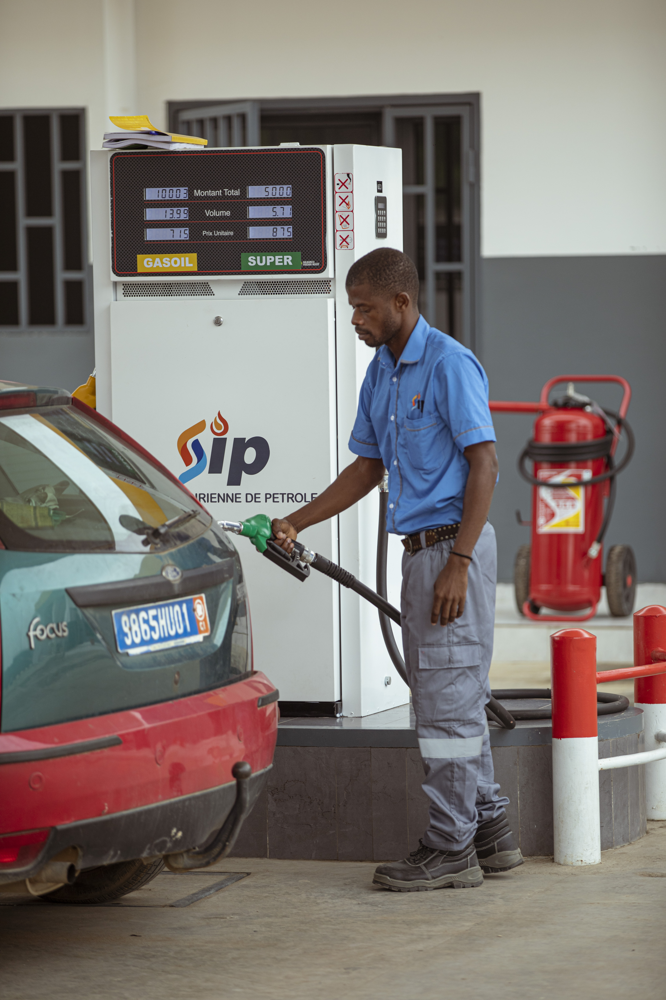
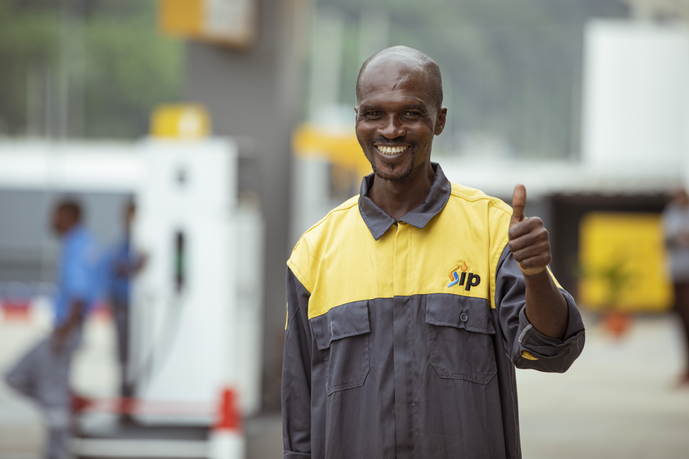

Notre Démarche & Charte RSE
Construire une énergie plus propre, plus sûre et plus solidaire en intégrant les enjeux sociétaux au cœur de chaque station SIP.
Notre Charte RSE & Développement Durable
Un cadre d'action structuré en 5 étapes clés pour ancrer la responsabilité sociétale et environnementale au cœur de chaque station SIP

Élaborer une charte RSE en 5 étapes
Notre feuille de route sociétale guide l'ensemble de nos équipes et partenaires vers une énergie responsable, sûre et solidaire.
-
1
Identifiez les valeurs et enjeux : Sécurité des personnes, intégrité, transparence et réduction de l'empreinte carbone.
-
2
Impliquez les parties prenantes : Dialogue continu avec nos clients, collaborateurs, transporteurs et partenaires.
-
3
Définissez des objectifs SMART : Cibles concrètes de qualité de service, de recyclage et de zéro accident.
-
4
Rédigez la charte : Formalisation d'engagements éthiques clairs et compréhensibles par tous.
-
5
Faites signer la charte : Signature et respect scrupuleux sur l'ensemble de nos sites en Côte d'Ivoire.
Des produits régulièrement testés
Conformité, performance et fiabilité
Nos carburants et produits dérivés font l'objet de contrôles et de tests réguliers afin de garantir leur conformité, leur performance et leur fiabilité.
- Analyses en laboratoire
- Contrôles qualité à différentes étapes de la distribution
- Suivi rigoureux des standards techniques
- Garantie de performance pour vos véhicules et équipements

La sécurité avant tout
Clients et équipes protégés
La sécurité de nos clients et de nos équipes est une priorité absolue dans toutes nos stations.
- Stations équipées d'extincteurs conformes aux normes
- Présence de bacs à sable pour intervention rapide
- Signalisation claire des consignes de sécurité
- Personnel formé aux procédures d'urgence
- Maintenance régulière des équipements de sécurité

L'équipe SIP
Des professionnels mobilisés sur le terrain
Gérants, pompistes et équipes de support incarnent au quotidien nos engagements qualité, sécurité et service. Leur formation continue et leur connaissance du réseau garantissent une exécution fiable des procédures SIP sur chaque site.
Partenaires flottes et institutions : le même niveau d'exigence s'applique, avec un accompagnement dédié via l'espace client Fidelity lorsque votre contrat le prévoit.
Qualité et excellence opérationnelle
Sur le terrain comme au siège, SIP progresse en continu pour aligner pratiques, procédures et attentes clients.

ISO 9001
Management qualité garantissant la conformité stricte et l'amélioration continue.

ISO 14001
Management environnemental certifié pour la préservation écologique et la propreté des sites.

ISO 45001
Santé et sécurité au travail certifiées, protégeant nos collaborateurs et usagers.
Charte RSE
Engagement citoyen et éthique durable ancré au cœur de chaque station SIP.
Selon la station, profitez du lavage auto, des corners restauration ou boutique, du gaz et des solutions dédiées aux professionnels. Retrouvez le détail sur la page Produits & Services ou sur Notre réseau.
Parlez-nous de votre expérience
Suggestion, félicitation ou point à améliorer après un passage en station ? Écrivez à commercial@sip-ci.com ou utilisez le formulaire contact : chaque message est lu par nos équipes.
Contactez-Nous